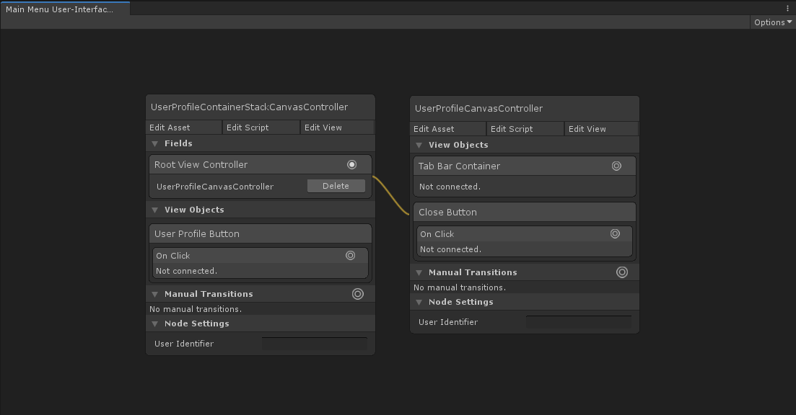

Stack Canvas Controller
Introduction
The StackCanvasController is a container view controller designed for stacking screens on top of each other. It manages a stack of child view controllers and offers transitions for pushing and popping view controllers on and off its stack. Each child view controller fills the viewControllersContainer transform and is placed in stack order, making the top-most view controller on the stack visible.
The StackCanvasController offers transitions for pushing and popping view controllers on and off its stack. Pushing a view controller onto the stack instantiates its view, embeds it within the stack controller's viewControllersContainer, and if necessary animates it on-screen. Inversely, popping a view controller off the stack animates it off-screen if necessary, and subsequently destroys it.
Pushing a view controller onto a full-screen StackCanvasController would have the same architectural user-experience as presenting that view controller (albeit possibly with a different transition animation). Where the StackCanvasController becomes particularly useful is in presenting view controllers that are not full-screen. This allows you to create presentation stacks within a view. For example, the Assassin demo embeds a StackCanvasController within its view and uses its Push and Pop transitions to present and dismiss the Friends List popover.
 The Friends List on the right is contained within a Stack Canvas Controller. It is pushed onto the stack when the user profile is selected and popped off the stack when the close button is pressed.
The Friends List on the right is contained within a Stack Canvas Controller. It is pushed onto the stack when the user profile is selected and popped off the stack when the close button is pressed.
The NavigationCanvasController is a specific type of StackCanvasController designed to provide a user-interface for hierarchical navigation. See the Navigation Canvas Controller section for more detail.
Creation
To create a StackCanvasController select Create/UI Graph/UI Canvas/Stack Canvas Controller from the Unity menu. This will create an asset instance of the StackCanvasController and a view prefab.
The template that UI Graph will use when creating stack canvas controllers can be changed in the package settings.
Presentation
Present Using A Graph (Recommended)
To present a stack controller from a graph, add the stack controller to the graph and, optionally, configure its root view controller by connecting the Root View Controller field to the desired view controller.
 Configuring the stack controller's root view controller to be the UserProfileCanvasController.
Present From Script
To present a stack controller directly from script, instantiate a new stack controller instance and present it. Optionally, instantiate its root view controller and use SetRoot to configure its root view controller.
public class YourCanvasController : CanvasController
{
// A reference to our stack canvas controller asset, configured in the inspector.
public StackCanvasController stackControllerTemplate;
// A reference to the root canvas controller asset, configured in the inspector.
public CanvasController rootCanvasControllerTemplate;
private void PresentStackController()
{
// Instantiate the navigation controller.
StackCanvasController stackController = Instantiate(stackControllerTemplate);
// Optionally, instantiate the root view controller. (Remember that this doesn't load its view into memory at this point.)
CanvasController rootViewController = Instantiate(rootCanvasControllerTemplate);
// Optionally, set the stack controller's root view controller.
stackController.SetRoot(rootViewController);
// Present the stack controller.
Present(stackController);
}
}
Appearance
The stack controller's layout can be adjusted in its view.
The viewControllersContainer transform determines where the stack controller will place its child view controllers.